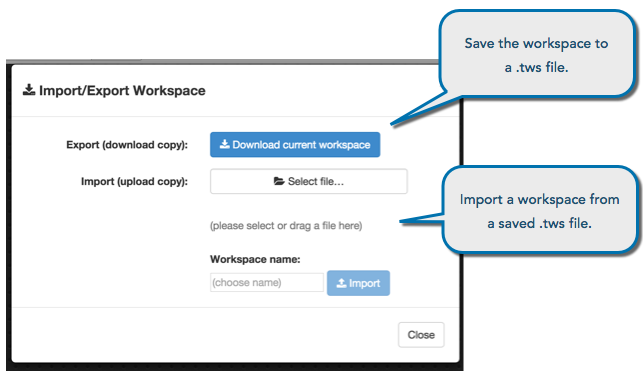

The TT platform allows users to easily share a configured workspace as a single file. This allows you to save workspaces to your system. You can also give the file to others who can them import it to their workspaces.

To export a workspace:
Save all changes in your workspace by clicking the Save icon.
Click the File button to open the menu.
With the File menu open, press and hold the Shift key and select Import/Export.
Click Download to save a copy of the workspace as a file with the extension .tws.
To import a workspace:
Save all changes in your workspace by clicking the Save icon.
Click the File button to open the menu.
With the File menu open, press and hold the Shift key and select Import/Export.
Click Select File to choose a .tws workspace file to upload.
You can also drag and drop a *.tws file under the Select File button.
Click Import.
Note: Refresh your browser to access the imported workspace.